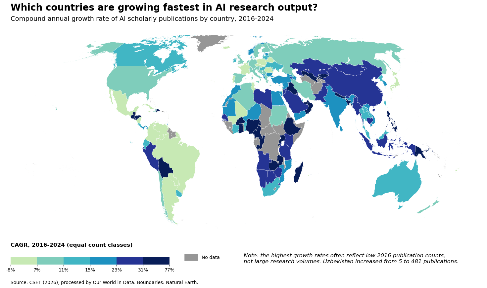

For Module 8 I built an original choropleth map showing how fast each country's AI research output grew between 2016 and 2024, using country boundary data joined to a compound annual growth rate (CAGR) computed from CSET's publication counts. Full sourcing, choices, and known limitations are documented in the data card below.
The Visualisation

Why a Choropleth
Choropleth maps were chosen over a cartogram or proportional symbol map because the underlying variable, CAGR, is a rate that applies evenly across each country's whole territory, which is exactly what choropleths are built to show through shaded regions.
Data Card
| Title | Compound annual growth rate of AI scholarly publications, by country (2016–2024) |
|---|---|
| Summary | A choropleth map of the world showing the growth of AI scholarly publications of each country from 2016 to 2024 in terms of Compound Annual Growth Rate (CAGR). Six equally sized classes of countries based on a sequential color scale. 44 out of 190 countries do not have CAGR (zero publications in any year). They are shown in grey instead of removing from the map. An equal earth projection is employed to show the true size of country's territory. |
| Data Sources |
|
| Mapping |
|
| Important Notes |
|
| Access |
Table: OWID's Annual scholarly publications on artificial intelligence. https://ourworldindata.org/grapher/annual-scholarly-publications-on-artificial-intelligence?tab=table CSV file: annual-scholarly-publications-on-artificial-intelligence.csv https://ourworldindata.org/grapher/annual-scholarly-publications-on-artificial-intelligence.csv?v=1&csvType=full&useColumnShortNames=false |
Reflection
The trickiest part of this module wasn't the code, it was reading the result correctly. A country's growth rate and its research volume are two different things, so the darkest colour on the map is not the same as "produces the most AI research" and it took checking the actual underlying numbers to be sure of that. Switching to an equal area projection was a similarly small change with an outsized effect.
References
- Center for Security and Emerging Technology. (2026). Country Activity Tracker: AI publications [Data set]. Emerging Technology Observatory, Georgetown University.
https://eto.tech/dataset-docs/country-activity-tracker/ - Natural Earth. (n.d.). Admin 0 – Countries [Data set].
https://www.naturalearthdata.com/downloads/10m-cultural-vectors/10m-admin-0-countries/ - Our World in Data. (2026). Annual scholarly publications on artificial intelligence [Data set].
https://ourworldindata.org/grapher/annual-scholarly-publications-on-artificial-intelligence